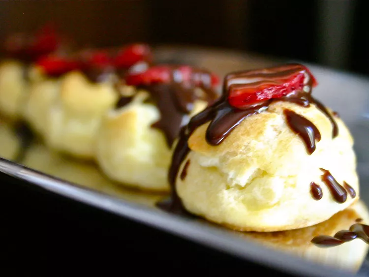

Profiteroles

Description
Light and delicate choux pastry puffs filled with fresh cream and covered with warm chocolate
ganache sauce are so easy to make,
but everyone will think you are a master pastry chef!
Profiteroles Ingredients:
- 1 cup water
- 1/2 cup butter
- 1/4 teaspoon salt
- 1 cup all-purpose flour
- 4 eggs
- 1 cup heavy cream
- 1/4 cup confectioners' sugar
- 1 teaspoon rose water (Optional)
- 1 cup heavy cream
- 9 ounces semisweet chocolate, chopped
Directions
- Preheat an oven to 425 degrees F (220 degrees C). Line a baking sheet with parchment paper.
- Bring the water to a boil in a saucepan. Stir in the butter and salt until the butter has melted;
remove the saucepan from the heat. Stir in the flour until no dry lumps remain;
stir in the eggs, one at a time, adding the next egg only after the last one has been completely incorporated into the mixture.
Drop the profiterole paste onto the prepared baking sheet in evenly spaced dollops.
- Bake in the preheated oven until the pastries have puffed up and turned golden brown, 25 to 30 minutes.
Remove from the baking sheet and cool on a wire rack to room temperature.
- Beat 1 cup of heavy cream to soft peaks; stir in the confectioners' sugar and rosewater until the sugar has dissolved.
Bring the remaining cup of heavy cream to a simmer in a small saucepan over medium heat.
Remove from the heat and stir in the chocolate until melted and smooth.
- To assemble, poke a hole into the bottom of each pastry and fill with the rose water cream.
Place the filled profiteroles onto individual serving plates and top with the warm sauce.
Leftover profiteroles may be stored sealed in an airtight container in the refrigerator up to 5 days.
Homepage